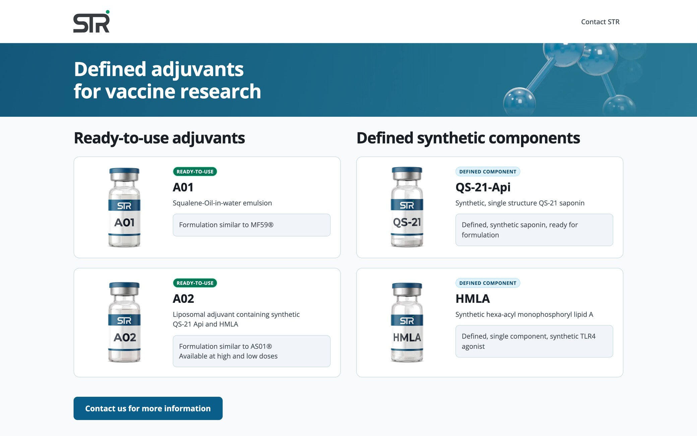
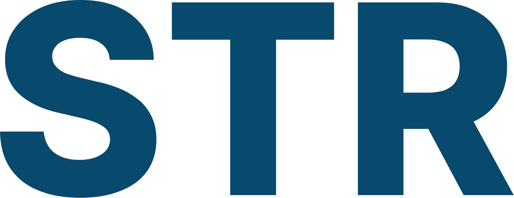
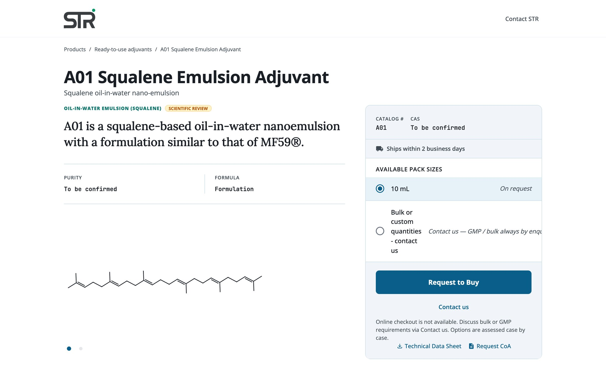
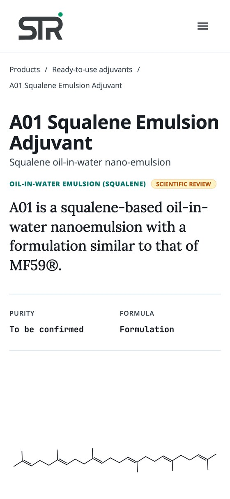
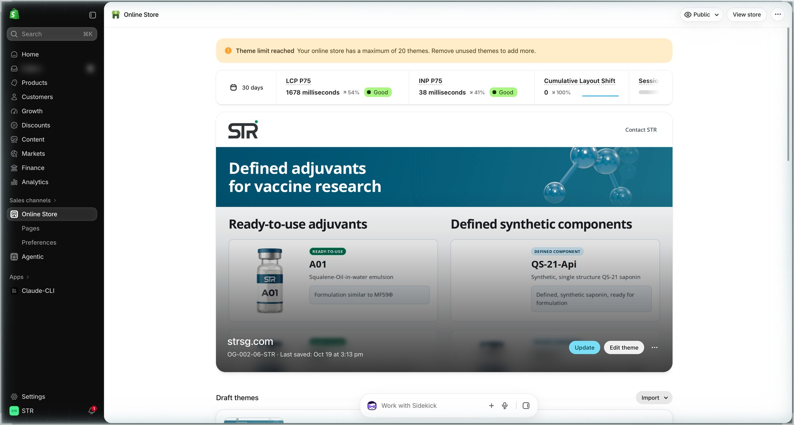
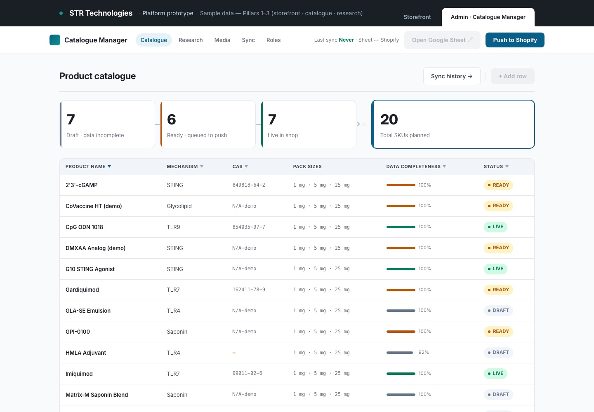
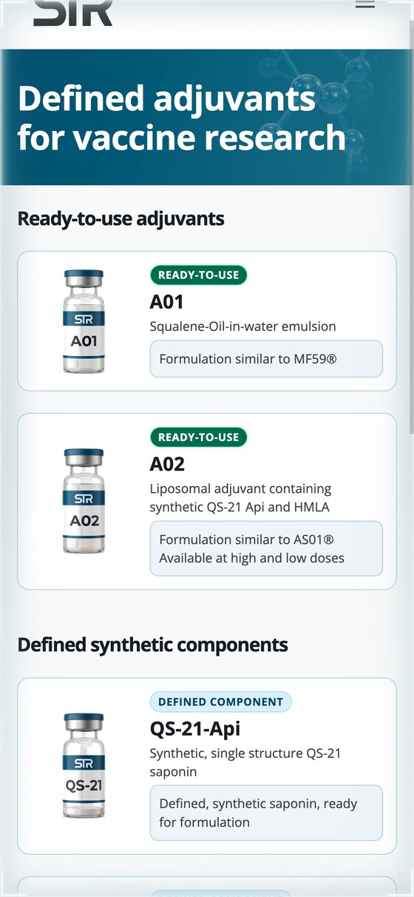

A shop for buyers who don't browse.
- STR sells research-grade vaccine adjuvants to scientists. The products are white powders in near-identical vials, so buyers compare formulation, purity and documentation before they trust a supplier.

The live homepage at strsg.com.
- The voice is set in the design system as scientific, never salesy: precise claims backed by data, and no marketing language a researcher would discount on sight.
Do
“Synthetic QS-21-Api demonstrates equivalent activity.”
“Secure supply chain.”
Don't
“Our amazing product boosts vaccines like never before.”
“The best adjuvant on the market.”
Examples from the writing rules in the STR design system.
- The logo was explored through seven routes, from a literal QS-21 structure to rounded geometry. The live mark adds a small green dot: a quiet signal of reliability.

V0 Structuralist V1 Industrial V2 Human-centric V4 Certifier V5 Modernist Five of the routes in the design system, converging on the live mark.
- A deep laboratory blue carries the brand, with a teal and a trust green held back for status. The same palette brands the shop, the checkout and the customer accounts.
Primary#0A5F8A
Primary dark#084A6D
Primary light#3D8AB5
Tint#E6F2F7
Secondary#0D9488
Trust green#059669
From the colour page of the STR design system.
- Product pages lead with what a scientist checks: formulation, purity, pack sizes and documentation, set like instrument output. Ordering sits beside the data, not in place of it.


- I built the Shopify theme from scratch rather than adapting a bought one, so it carries only what this catalogue needs. Shopify's own speed report rates it Good.

The STR theme in Shopify admin, with Shopify's speed report.
- The client team runs the catalogue themselves. A spreadsheet stays the source of truth, and a catalogue manager shows what is draft, ready or live before anything reaches the shop.

Client-review prototype, running on sample data.
- The storefront went live at strsg.com in time for World Vaccine Congress Europe in Amsterdam, and reads as well on a phone as at a desk.

strsg.com on a phone.
1 of 8
The live homepage at strsg.com.
Do
“Synthetic QS-21-Api demonstrates equivalent activity.”
“Secure supply chain.”
Don't
“Our amazing product boosts vaccines like never before.”
“The best adjuvant on the market.”
Examples from the writing rules in the STR design system.
Five of the routes in the design system, converging on the live mark.
Primary#0A5F8A
Primary dark#084A6D
Primary light#3D8AB5
Tint#E6F2F7
Secondary#0D9488
Trust green#059669
From the colour page of the STR design system.
The STR theme in Shopify admin, with Shopify's speed report.
Client-review prototype, running on sample data.
strsg.com on a phone.
What I delivered
- A Shopify theme built from scratch
- Product pages built around specifications
- Branded checkout and customer accounts
- A design system hub
- A catalogue manager for the client team
- The storefront, live at strsg.com
Defined adjuvantsfor vaccine research.
The line on STR's own homepage, live at strsg.com. Also in this series: mAbV.
Phil Parry20+ years in UX, brand and design systems
phil.parry@oganiko.com · oganiko.com
Draft: waiting on Phil's answers and STR's approval before public use.